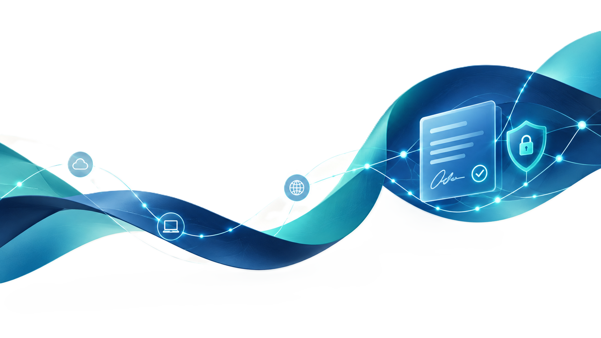

Vizyonumuz
Müşterilerimize değer katacak Bilgi Teknolojileri hizmet ve çözümlerimizi uluslararası kalite standartlarında, marka bağımsız, ülke çapında yaygın ve donanımlı insan kaynağı ile sunmak ve bu alanda tercih edilen ilk şirket olmak.
Elektronik Sertifika Hizmet Sağlayıcısı; yazılım, elektronik imza satışı, bakım ve danışmanlık hizmetleri, BT eğitim hizmetleri.

Kıbrıs'daki yaygın hizmet ağımız ve her biri kendi alanında deneyimli hizmet ekibimiz ile tüm Bilgi Teknolojileri hizmetlerini tek bir noktadan temin etme imkanı sunuyoruz. Hizmet odaklı bir şirket olarak da Kıbrıs'da Bilgi Teknolojileri hizmetlerinin önde gelen servis sağlayıcısı olmayı hedefliyoruz.
Elektronik Sertifika Hizmet Sağlayıcısı olarak yazılım, elektronik imza satışı, bakım ve danışmanlık hizmetleri ile BT eğitim hizmetleri sunuyoruz.
Varlık nedenimiz müşterilerimizdir. Onlara rekabet avantajı sağlayarak onlarla birlikte büyürüz. En önemli varlığımız çalışanlarımızdır. Bilgi birikimimizi sürekli geliştirmeyi hedefleriz. Çalışanlarımızın mutluluğu, müşteri memnuniyetinin en önemli güvencesidir. Sürekli gelişim yaşamın yasasıdır. Denizler Bilişim'i her zaman en önde tutacak olan ancak yeni ve yaratıcı çözümlerdir. Müşterilerimiz ve çalışanlarımızla ilişkilerimizi güven, saygı ve karşılıklı kazanç temeli üzerine kurarız.
Müşterilerimize değer katacak Bilgi Teknolojileri hizmet ve çözümlerimizi uluslararası kalite standartlarında, marka bağımsız, ülke çapında yaygın ve donanımlı insan kaynağı ile sunmak ve bu alanda tercih edilen ilk şirket olmak.
Müşterilerimizin iş hedeflerini anlayarak, ihtiyaç duyduğu Bilgi Teknolojilerini, hizmet ve çözümlerini yüksek müşteri memnuniyeti sağlayarak sunmak.
Kalite politikamızın amacı Denizler Bilişim Hizmetleri LTD.'in tüm faaliyetlerinde sürekli bir şekilde müşteri memnuniyetini hedeflemek, en yüksek kalite standartlarını korumak ve geliştirmek için, kuruluşun amacına uygun kalite hedeflerinin oluşturulması ve gözden geçirilmesine yönelik bir çerçeve sağlamaktır.
Denizler Bilişim Hizmetleri LTD'nin tüm departmanlarını kapsar.
Üst yönetimimiz bu politika ile; kalite yönetim sisteminin şartlarına uyma ve kalite yönetim sisteminin etkinliğinin sürekli olarak iyileştirilmesini taahhüd eder. Kalite politikamız, tüm çalışanlarımızın ve müşterilerimizin firmadan beklentilerini yansıtmaya özen gösterir. Bu politika ile aşağıda belirtilen maddeler, bölüm sorumluları ve tüm çalışanlarımız tarafından benimsenmiştir ve firmamızın kalite yönetim sisteminin bir parçasıdır.
Çalıştığımız müşteriler, devlet kuruluşları ve taşeronlarımız ile ilişkilerimiz çok değerlidir. Sunmakta olduğumuz hizmetlerin sürekliliği, elimizde tuttuğumuz bilgilerin gizliliği, müşterilerin veya kendi içimizdeki bilgi varlıklarının bütünlüğü yüksek öneme sahiptir.
Hizmetlerimizin sürekliliğini, kritik bilgilerin gizliliğini ve bilgi varlıklarımızın bütünlüklerini sağlamak için;
Müşterinin iş hedeflerini, çalışma ortamını ve ihtiyaçlarını öngörerek yeni fikir ve yaklaşımlar geliştirmek.
Müşteri ve diğer çalışanlarla olan ilişkilerde her zaman işin gerektirdiği profesyonellik ve disiplinle çalışmak.
Bilgiyi paylaşıp, farklı kişi ve gruplarla iletişim kurarak ortak hedeflere yönelmek ve geleceğin ihtiyaçlarını öngörmek.
İletişim araç ve yöntemlerini etkin kullanarak gerekli bilgileri doğru kişi ve kurumlara zamanında iletmek.

Denizler Bilişim Hizmetleri Ltd. hem stratejik iş ortakları, hem de servis iş ortakları ile çalışmada geniş deneyime sahiptir. Denizler Bilişim Hizmetleri stratejik iş ortakları, adlarına çeşitli hizmetler sunduğu üretici, dağıtıcı ve sistem entegratör firmalardır. Denizler Bilişim Hizmetleri'nin tüm organizasyonu ve iş süreçleri stratejik iş ortaklarına en üst kalitede hizmet sunmak üzere yapılandırılmıştır.
Kurumunuzun ihtiyaçlarını görüşmek için bize ulaşın.
İletişime Geçin